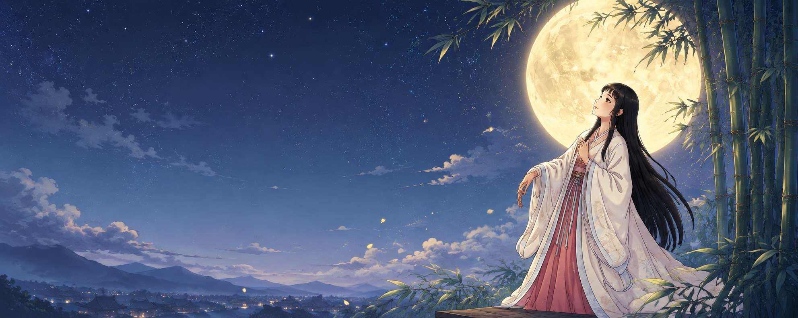
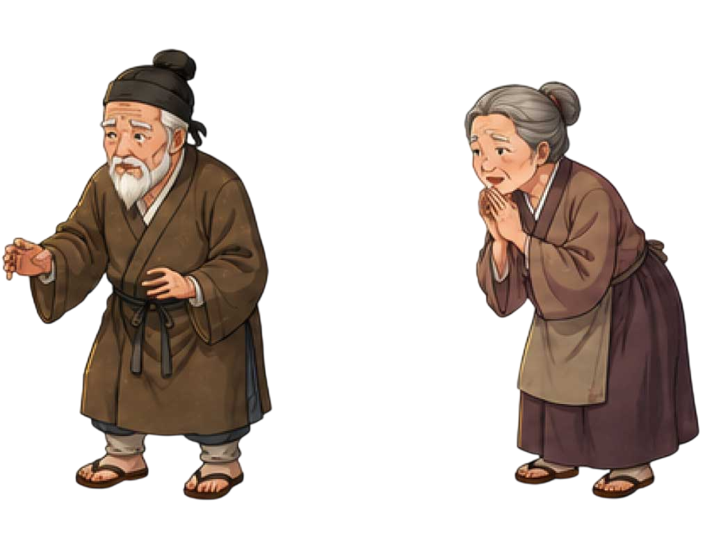
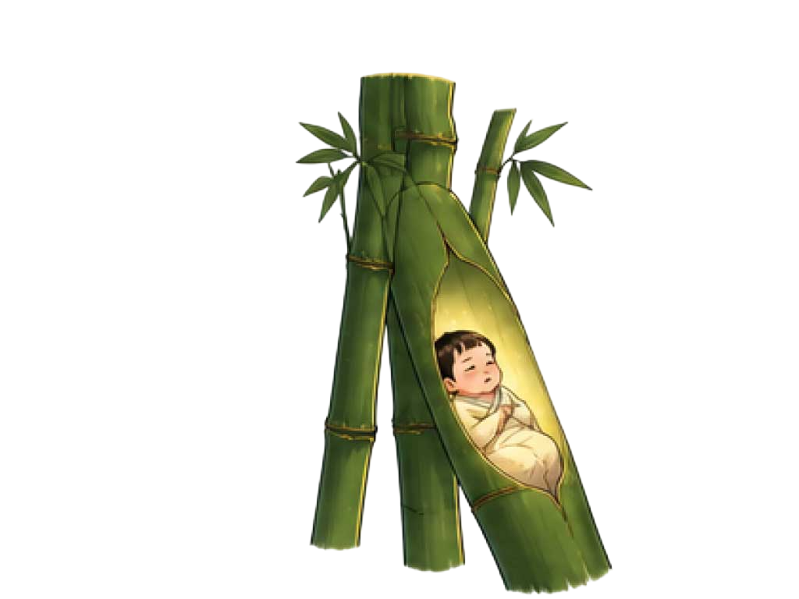
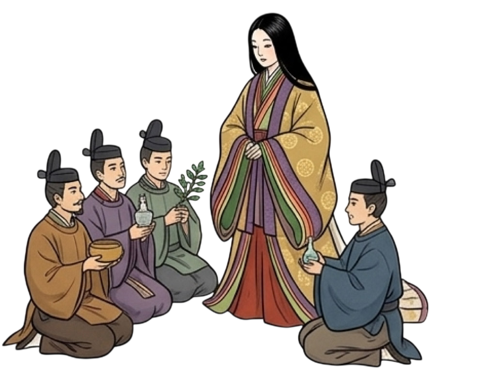
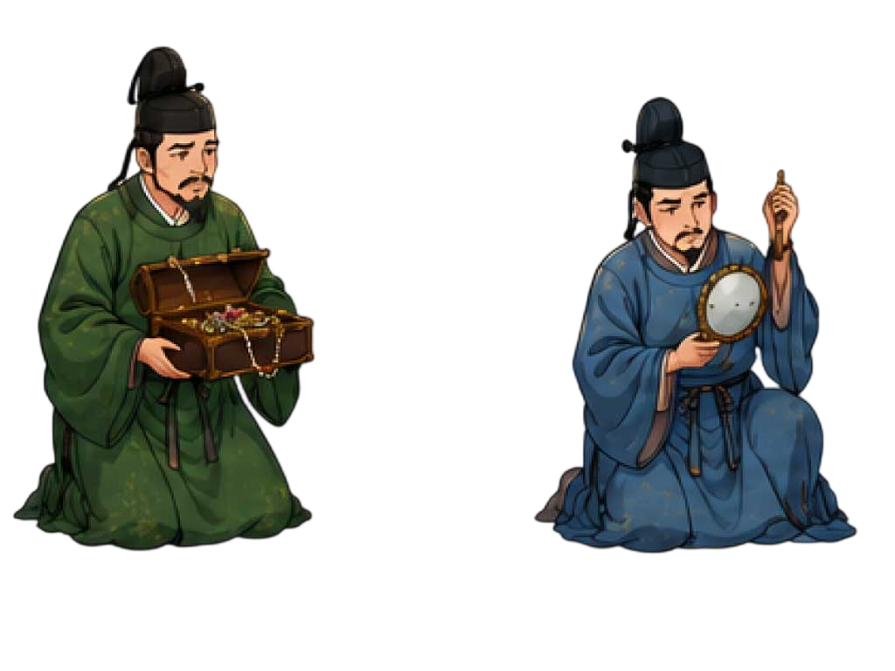
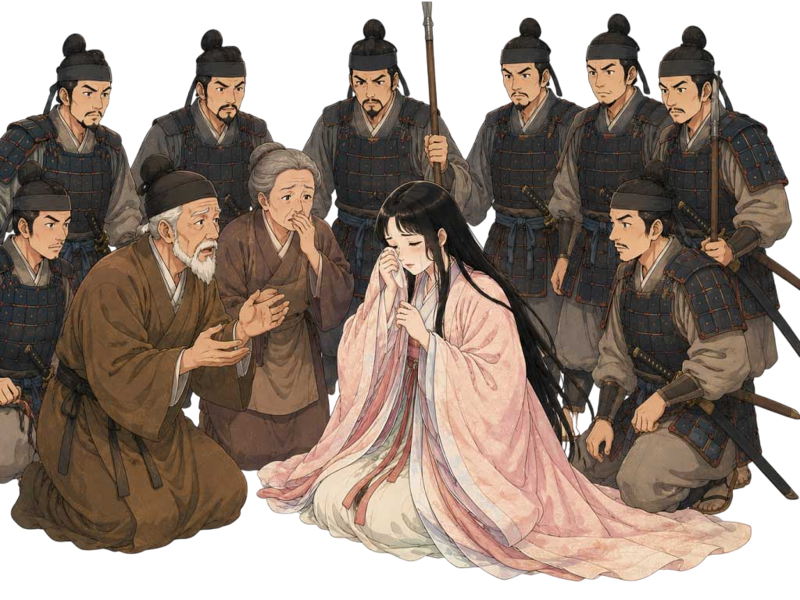
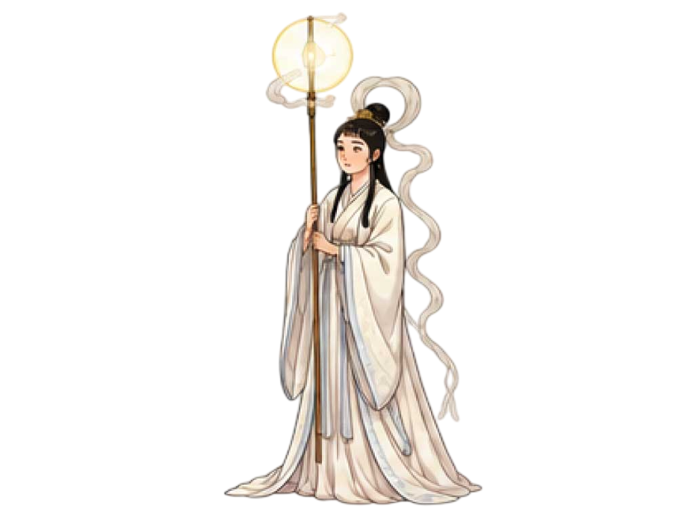
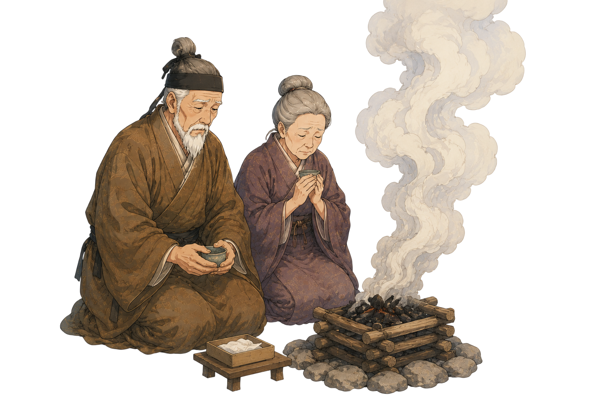

― 聖なる竹 ―
竹は中が空洞であるため、神が天から降りる「通り道（依代）」と信じられていました。竹から現れる描写は、かぐや姫が「天界から来た特別な存在」であることを示す、当時最も説得力のある演出だったんでしょうね。
― 竹と職人の暮らし ―
竹は当時の生活に欠かせない万能素材であり、製鉄技術（ふいご）にも不可欠でした。竹から黄金や姫が見つかるのは、「日常の労働の中にこそ奇跡が宿り、優れた技術が富を生む」という当時の職人たちへの願いや、技術への敬意が込められているんです。

見たい話しを選んでください
今は昔、あるところに竹を取って細工物を作り、暮らしているおじいさんがいました。 人々は「竹取の翁（たけとりのおきな）」と呼び、名を讃岐造（さぬきのみやつこ）といいました。

ある日、おじいさんが竹林に入ると、根元が不思議に光り輝く竹がありました。 「おや、何事だろう」と近寄ってその竹を切ってみると、 中には三寸（約九センチ）ほどの、透き通るように美しい女の子が座っていました。
おじいさんはその子を掌に乗せて家に帰り、 おばあさんと一緒に育てることにしました。

その日から、おじいさんが竹を切り出すたびに、節の中から黄金が見つかるようになり、貧しかった家はみるみるうちに裕福になっていきました。
竹は中が空洞であるため、神が天から降りる「通り道（依代）」と信じられていました。竹から現れる描写は、かぐや姫が「天界から来た特別な存在」であることを示す、当時最も説得力のある演出だったんでしょうね。
竹は当時の生活に欠かせない万能素材であり、製鉄技術（ふいご）にも不可欠でした。竹から黄金や姫が見つかるのは、「日常の労働の中にこそ奇跡が宿り、優れた技術が富を生む」という当時の職人たちへの願いや、技術への敬意が込められているんです。
女の子は、わずか三ヶ月ほどで驚くほど美しく成長しました。
その輝くような美しさから、彼女は「なよ竹のかぐや姫」と名付けられます。
その噂はまたたく間に国中に広まり、彼女を一目見よう、妻に迎えようと、
多くの男たちが家の周りに集まるようになりました。

中でも熱心だった五人の貴公子たちに対し、かぐや姫は「私の望む宝物を持ってくることができた方に、 心を捧げましょう」と、厳しい条件を出します。 「仏の御石の鉢」「蓬莱の玉の枝」「火鼠の皮衣」 「龍の首の珠」「燕の持っている子安貝」 しかし、どれもこの世には存在しないか、命がけでなければ手に入らないものばかり。 男たちは偽物を作ったり、途中で諦めたりして、誰も姫の心を得ることはできませんでした。
竹取の翁は女の子を命名する際、御室戸斎部（みむろどいんべ）の秋田という人物を招いて名を付けさせました。
「なよ竹のかぐや姫」と名付けられた。彼女の美しさが「光り輝く」ようであったことに由来します。
石作皇子 ー 仏の御石の鉢
非常に古いとされる聖なる鉢。偽物を用意してばれてしまいます。
車持皇子 ー 蓬莱の玉の枝
根は銀、幹は金、実は真珠でできた木。職人に作らせるが、賃金未払いでこちらもばれてしまいます。
阿倍御主人 ー 火鼠の皮衣
燃えない布。本物を手に入れようとするが、焼いて燃えてしまい偽物と判明します。
大伴御幸 ー 龍の首の珠
龍が持っているという珠。嵐に巻き込まれ、目的を達成できませんでした。
石上麻呂足 ー 燕の子安貝
燕が産むという貝。巣を探して高い所から落ちて大怪我をしてしまいます。
車持皇子のモデルは藤原不比等と言われています。
「右大臣」という立場でありながら、物語の中でコテンパンにされているという事実は、当時の読者にとって「権力者が転落する」作者は不明ですが、藤原氏によって出世を阻まれた、「反藤原氏勢力」の息がかかった人物ではないかと考えられています。
やがて月日が流れ、夏の美しい月が出るようになると、 かぐや姫は月を見ては激しく泣き沈むようになりました。 心配したおじいさんが理由を尋ねると、 姫は涙ながらに答えました。 「私はこの世界の人間ではありません。月の都から来た者なのです。 来る八月十五日の満月の夜、迎えの者が来て、私は月へ帰らねばなりません」 おじいさんは驚き、「あんなに大切に育てた姫を、決して手放すものか」と、 当日は大勢の兵を雇い、家の守りを固めました。

姫が帰る日を「満月の夜」としたのは、当時の人々にとって月が「神聖な天界」であり、 満月はその力が最も強まる時間だったからです。 つまり、この設定には「月の都という宇宙規模のルールには、地上の人間がどんなに足掻（あが）いても逆らえない」という、 変えられない運命の残酷さが隠されているのです。 おじいさんの必死の兵士防衛は、その大きな運命に対する人間側の悲しい抵抗だったと言えます。
いよいよ満月の夜。真夜中になると、家の周りが昼間よりも明るく照らされ、 空から雲に乗った天人たちが降りてきました。 兵たちは光に目を奪われ、指一本動かすことができません。

かぐや姫は、泣き崩れるおじいさんとおばあさんに別れの言葉を遺しました。 「どうか、私を忘れないでください。この薬を飲めば、病も癒え、 長く生きられるでしょう」 そう言って、不死の薬を渡しました。

天人がかぐや姫に着せた「天の羽衣」は、単なる美しい服ではありません。 これを着ると、地上で過ごした思い出や汚れがすべて消えてしまうという、「記憶消去（リセット）装置」のようなものなんです。 愛する家族との思い出をいとも簡単に消し去ってしまうこの描写には、月の文明の冷たさと、人間としての情を一切認めない「別れの残酷さ」が痛いほど込められているのですよ。
残されたおじいさんとおばあさんは、姫のいない世界で長生きしても仕方がないと、薬を飲むことはありませんでした。
その薬は、日本で一番高い山の頂で焼かれました。
その時、空へ立ち昇った煙は、今でも雲の中に消えていくといいます。
その山は「不死の山」すなわち「富士山」と呼ばれるようになりました。

帝やおじいさんたちは、かぐや姫がいない世界で永遠に生きても意味がないと、不死の薬を日本で一番高い山で焼きました。 「不死」の言葉から「ふじ（富士）」の名がついたとも言われており、登り続ける煙には、地上に残された者たちの尽きない想いが込められているのです。